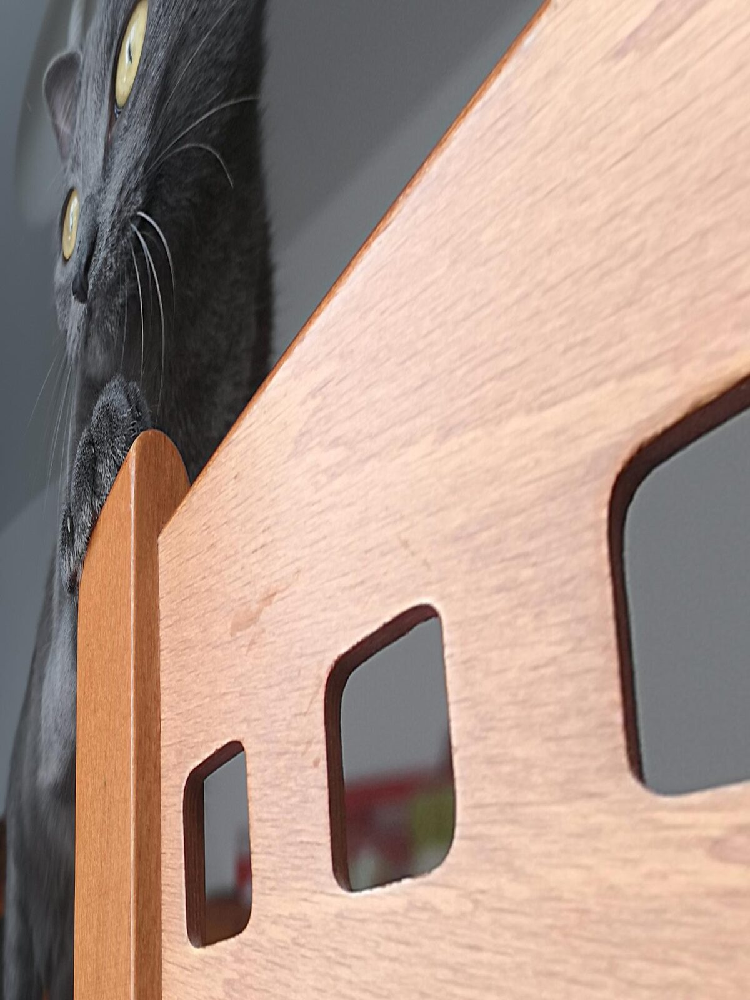

Augmentor aims to be a standalone library that is platform and framework independent. It employs a stochastic approach using building blocks that allow for operations to be pieced together in a pipeline.
Augmentor is written in Python. A Julia version of the package is also being developed as a sister project.
Transformations
Description
Tags
1.
It crops the images based on the passed parameters (width and height of the area to be cropped and whether the area to be cropped should be taken from the center of the image or from a random position within the image).
Performs rotations on images in multiples of 90 degrees. The rotation parameter must be one of 90, 180, 270 or -1 (rotates the image randomly by either 90, 180, or 270 degrees).
Performs rotations. The returned image has the same dimensions as the original one: after the rotation has been performed, the largest possible area of the same aspect ratio of the original image is cropped from the rotated image, and this is then resized to match the original image size.
Shears the images in a certain direction. The shearing can occur along the x or y axis and in both directions (i.e., left or right along the x axis, up or down along the y axis). This transformation returns an image of the same dimension as the input image. The shearing axis is randomized.
# with numpy==1.19.5
operation = A.Operations.Skew(probability=1, skew_type='TILT', magnitude=5)
Original
Augmented

# with numpy==1.19.5
operation = A.Operations.Skew(probability=1, skew_type='CORNER', magnitude=5)
21.
Zooms the images but returns a cropped region of the zoomed image of the same dimension as the original image. The amount of applied zoom is random, between min_factor and max_factor.
Zooms the images but returns a cropped region of the zoomed image of the same dimension as the original image. The amount of applied zoom is random, between min_factor and max_factor.
Zooms into random areas of the image. Zooms into a random area of the image, rather than the centre of the image, as is done by Zoom. The zoom factor is fixed unless randomise is set to True.
Adjusts the brightness and contrast of an image according to the formula α * image[i] + β * M, where M is either mean(image) or the maximum intensity value.
2.
Combines the first dimension of a given array into a colorant of type colortype using the function ImageCore.colorview. The main difference is that a separate color channel is also expected for Gray images.
3.
Converts the element type of the given array/image into the given eltype. This operation is especially useful for converting color images to grayscale (or the other way around). That said, the operation is not specific to color types and can also be used for numeric arrays (e.g. with separated channels).
4.
Crops out the area denoted by the specified pixel ranges.
CROP
5.
Crops out the area denoted by the specified pixel ranges. In contrast to Crop, the position x=1y=1 is not necessarily located at the top left of the current image, but instead depends on the cumulative effect of the previous transformations.
CROP
6.
Crops out the biggest area around the center of the given image such that the output image satisfies the specified aspect ratio.
CROP
7.
Crops out the area of the specified pixel size around the center of the input image.
CROP
8.
Distorts the given image using a randomly (uniform) generated vector field of the given grid size.
9.
Horizontally flips the input image.
FLIP
10.
Vertically flips the input image.
FLIP
11.
Blurs an image using a Gaussian filter.
BLUR
12.
Crops out the biggest possible area at some random position of the given image, such that the output image satisfies the specified aspect ratio.
CROP
13.
Crops out an area of predefined size at some random position of the given image.
CROP
14.
Resizes the image to a pre-specified fixed size; the aspect ratio of the image is not preserved.
15.
Rotates counterclockwise around the center of the image.
ROTATION
16.
Rotates the image by 180 degrees.
ROTATION
17.
Rotates the image by 270 degrees.
ROTATION
18.
Rotates the image by 90 degrees.
ROTATION
19.
Resizes the image by multiplying the height and width by specified factors; the output image size depends on the size of the input image.
20.
Performs horizontal shear.
SHEAR
21.
Performs vertical shear.
SHEAR
22.
Splits out the color channels of the given image.
23.
Resizes the height and width of the image based on specified factors, but crops the image in a way that maintains the original dimensions.